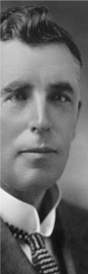
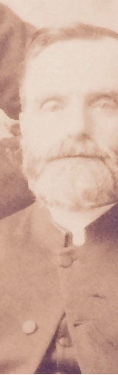

-2-MasterItem.svg)
The original five voices recorded were:
1.
Dr. David Christie
, our minister from 1909 to 1929. The original disc must have been
damaged, so we have lost his voice. His bio is in this publication.
2.
Minnie Campbell
— who, with her husband, Colin — was an original, 1893, member
of the congregation. (Minnie’s bio is to be found on the founders’ page of this book.)
She refers in her message to two other remaining founders: Mrs. Crowe and J.B.
Mitchell.
She refers to Mitchell's gift to us of the flags in our sanctuary.



Rev. Ernest Marshall Howse
